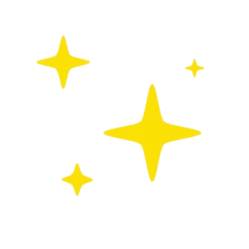
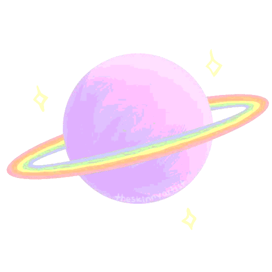
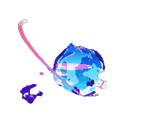

La Luna, el objeto más grande y brillante de nuestro cielo nocturno, hace de la Tierra un planeta más habitable al moderar el bamboleo de nuestro planeta sobre su eje, lo que da lugar a un clima relativamente estable.
También provoca las mareas, creando un ritmo que ha guiado a los humanos durante miles de años.
La Luna se formó probablemente tras la colisión de un cuerpo del tamaño de Marte con la Tierra.

ESTRELLAS
Las estrellas son cuerpos celestes gigantes, compuestos principalmente por hidrógeno y helio, que producen luz y calor desde sus arremolinadas fundiciones nucleares.
Aparte del Sol, todos los puntos luminosos que vemos en el cielo se encuentran a años luz de la Tierra.
Las estrellas son los bloques de construcción de las galaxias, y existen mil millones en el universo.

PLANETAS
Un planeta es un cuerpo celeste sin luz propia y de forma esférica que gira sobre sí mismo y comúnmente alrededor de una estrella (existen planetas sin Soles).
Otra importante característica de un planeta, es su gravedad para “limpiar” o despejar su área circundante de objetos que se mantengan cercanos a su órbita de traslación.

GALAXIAS
Una galaxia es un sistema formado por millones de estrellas, nubes de gas, planetas y otros cuerpos celestes, que permanecen unidos entre sí debido a las interacciones gravitacionales.
La galaxia en que vivimos, la Vía Láctea, se compone de entre 200 y 400 mil millones de estrellas, una de ellas es el Sol, el centro de nuestro Sistema Solar. Aunque durante muchos siglos se creyó que solo existía la Vía Láctea, a partir de los avances tecnológicos y científicos en materia de observación del espacio, se descubrió que existían otras galaxias.